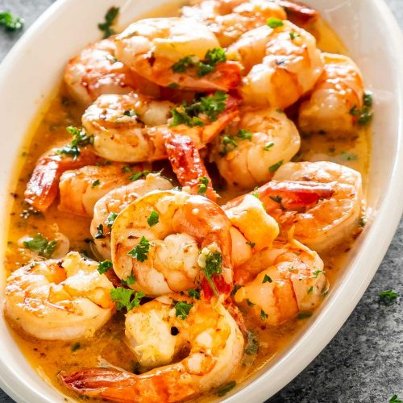

Garlic Butter Shrimp

Description
This garlic butter shrimp recipe will be the best shrimp you have ever tasted.
So, instead of being a typical food blogger who goes on for eternity about nothing before the recipe, lets just get to it.
Ingredients
- 1/2 pound of shrimp
- 3 cloves of garlic
- 2 Tablespoons of butter
- 1 teaspoons of dried red pepper flake
- 1 teaspoon of fresh parsley
Steps
- Take shrimp out of freezer and thaw with trickling water
- Once thawed, remove shells, tails, and the vein from each shrimp.
- Put shrimp aside and peel and mince your three cloves of garlic
- Now in a pan, heat butter over medium low heat, then add your garlic and shrimp, making sure not to overcook your shrimp
- Once the shrimp is pink on both sides and cooked to your liking, add the red pepper flakes and parsley, stire and your done.
- Serve the shrimp by itself, or you can serve it on pasta or a nice salad.